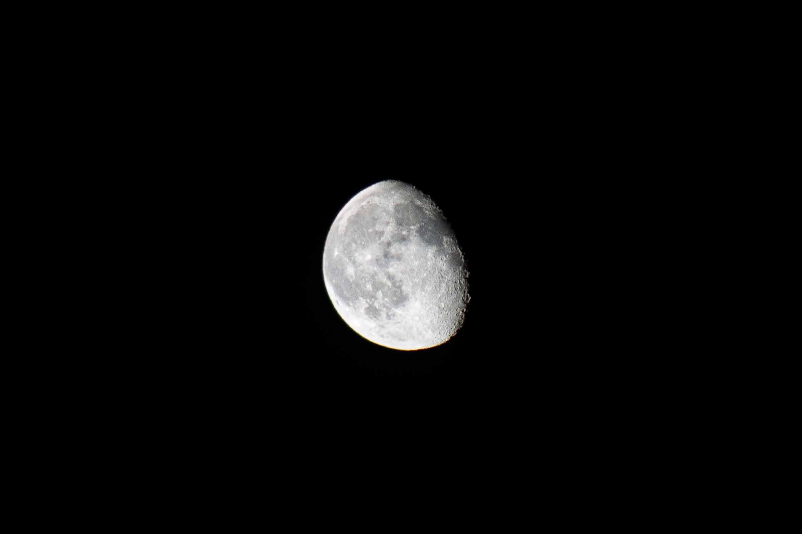
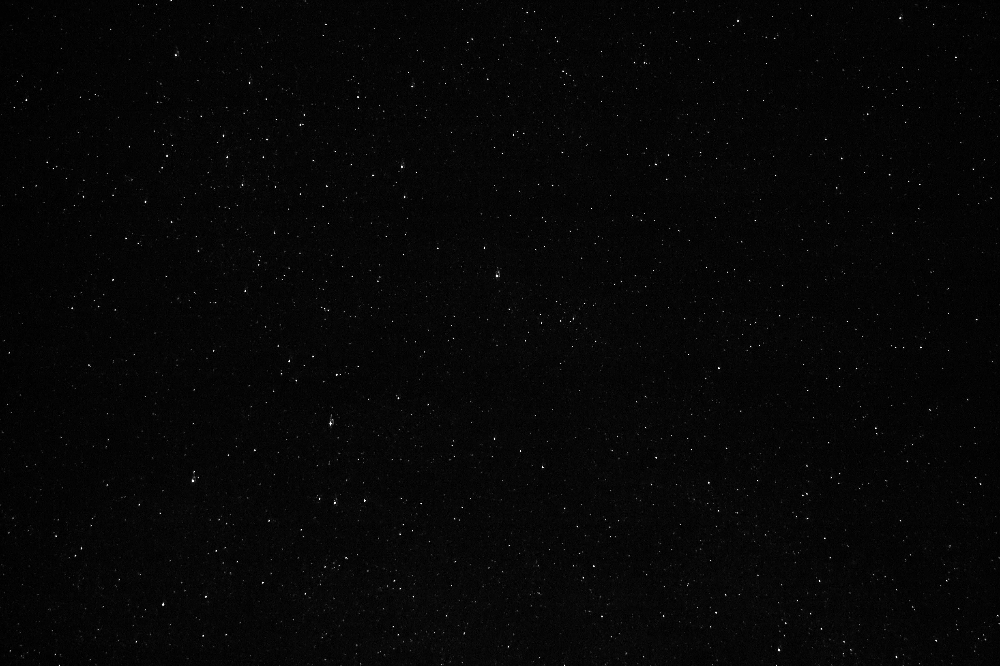
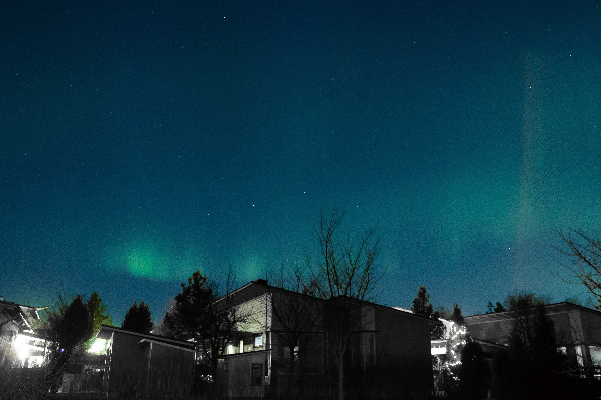

Our only natural satellite.
A photo of a starry night, with the Andromeda Galaxy faintly visible.
A flight path under the auroras.

B&W image of a starry night.

Intense auroras in Southern Finland.